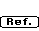

The reference dialog box provides the ability to store important bibliographic
information with the unit cell. This allows a more accurate identification
of the crystal. A series of 5 ASCII text lines and 3 numeric fields may
be stored. Suggested information includes: common name, crystal formula,
author, date, publication and volume and page number, and a two valued designation
for identification. It is accessed from the Crystal Definition Dialog Box
with the  button. For a new crystal, Desktop Microscopist
attempts to automatically determine the empirical formula. However, if this
is incorrect, changes may be made as desired.
1. To change data, click on the button with the
mouse. Pressing the <return> key will activate the button. This button
is equivalent to a standard Cancel button.